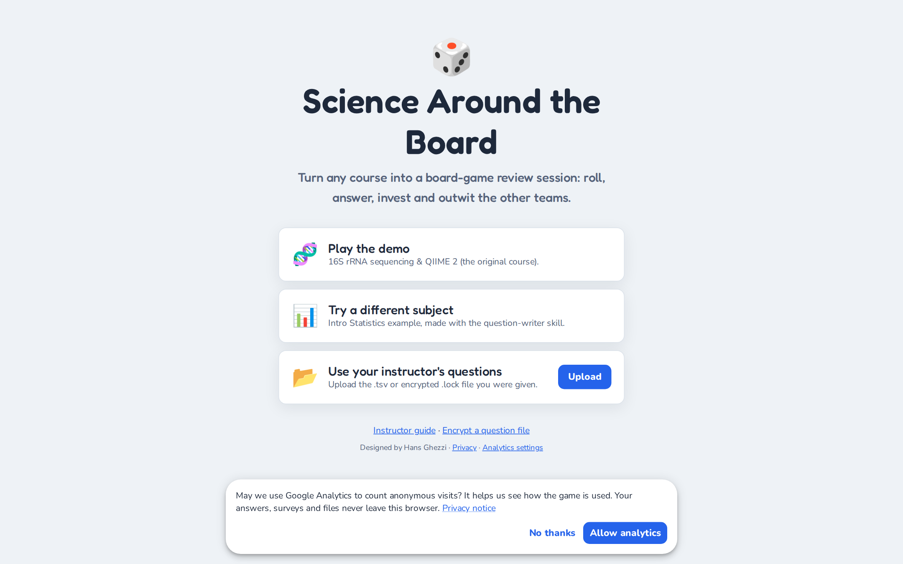
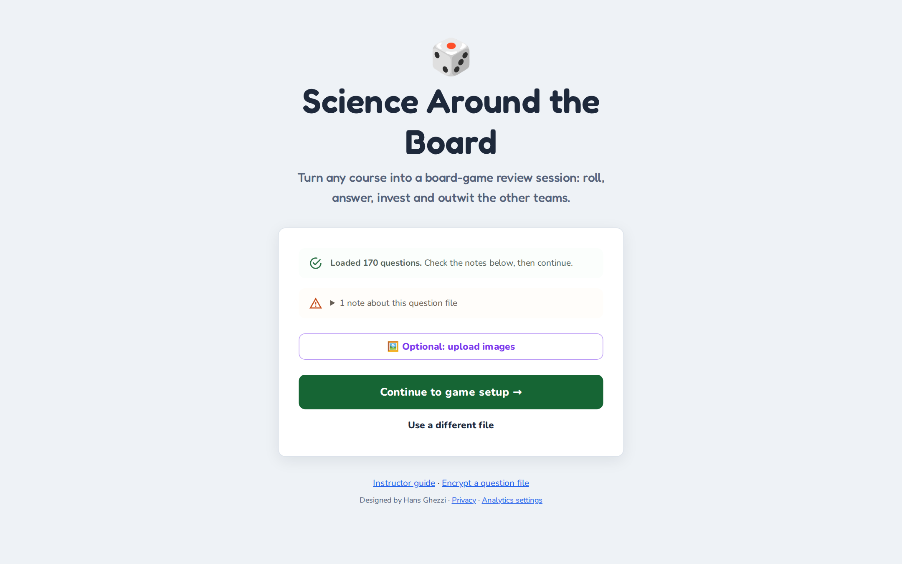
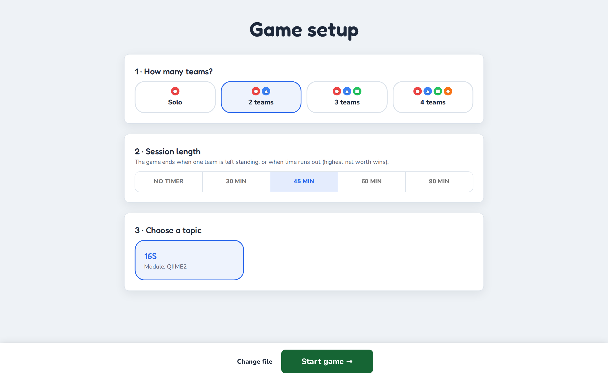
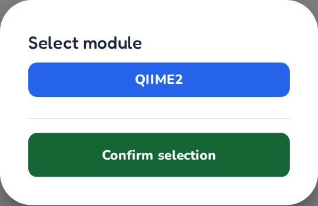
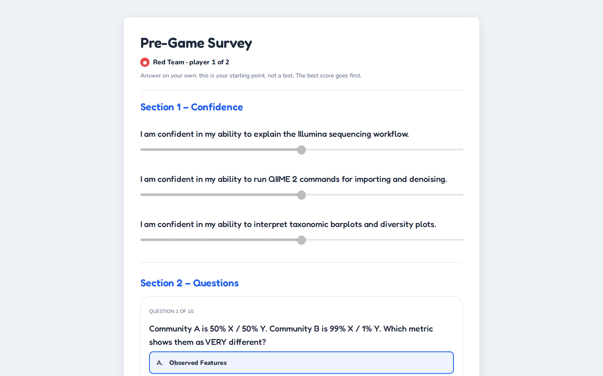
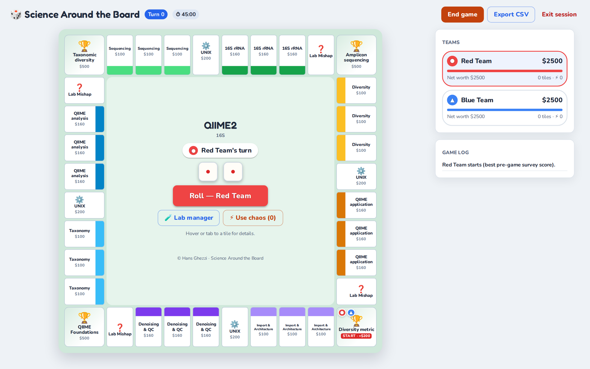
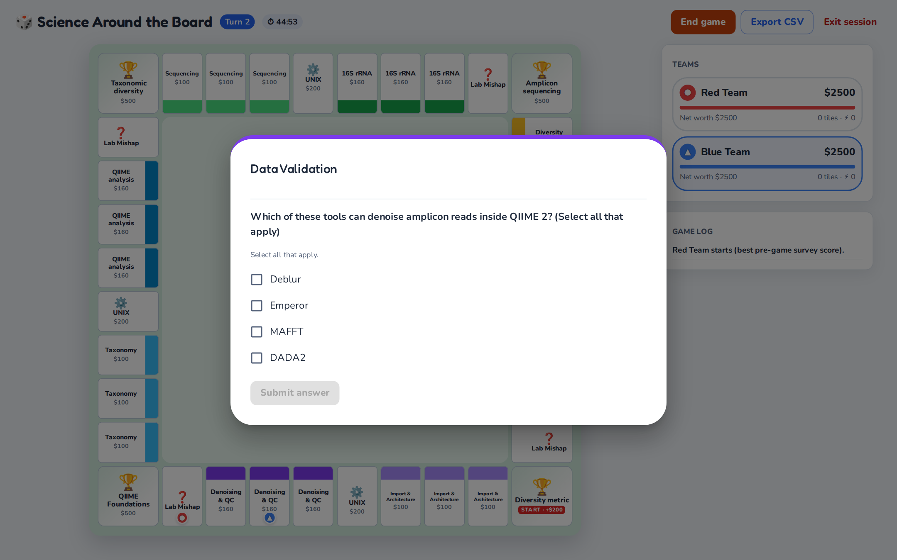
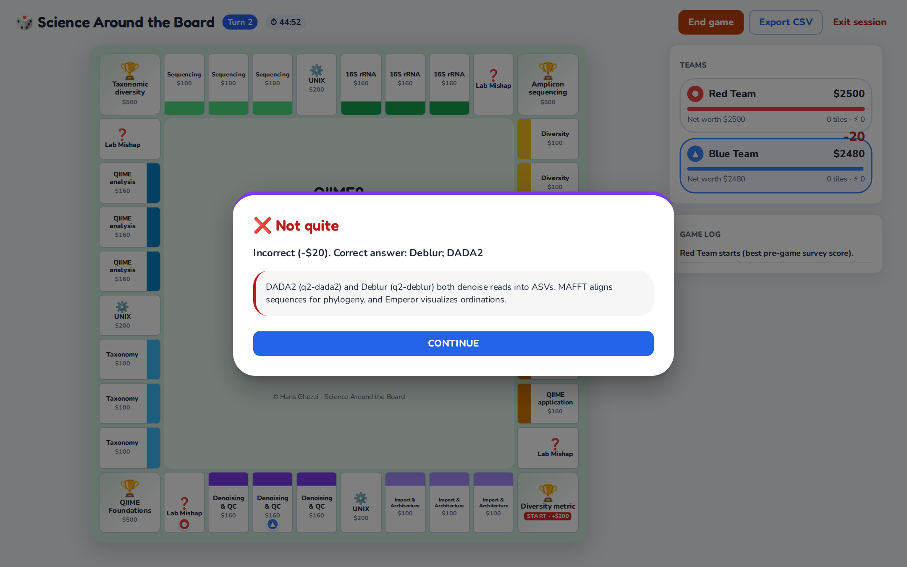
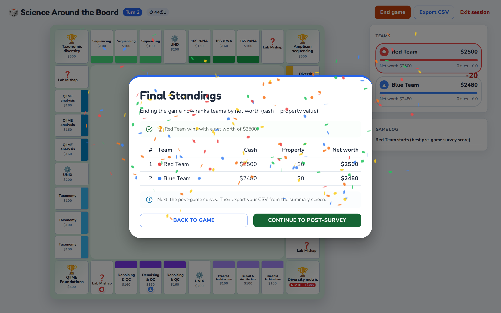

Instructor Guide to ‘Science Around the Board’
By Hans Ghezzi · Living edition, last updated October 2026
This guide is kept in the project repository and is rebuilt every time the game changes, so it always matches the version at https://hghezzi.github.io/Science-Around-the-Board/. The web version is at hghezzi.github.io/Science-Around-the-Board/guide and the PDF at SAB_Instructor_Guide.pdf.
What’s new
October 2026
- Works in dark mode. Questions used to be invisible when a browser was set to dark mode. The game now follows each device’s light or dark setting, and both are readable.
- A new look: a redesigned board with coloured theme bands, animated dice, team symbols (●▲■◆) so teams are not told apart by colour alone, and clearer answer feedback.
- New ways to win: last team standing, or the highest net worth when time runs out. An optional session timer is set on the setup screen.
- Bankruptcy has consequences: each team gets one Emergency Grant. Fail it, or go bankrupt again, and the team is eliminated.
- New question formats: select-all-that-apply, numeric (with tolerance), ordering and short answer, alongside multiple choice and true/false.
- Answer options are shuffled every time a question appears, and wrong answers now show the correct one.
- File checker: when a question file is loaded, the game lists any problems before you start.
- Images are optional and missing ones are simply hidden.
- Chaos challenges and grant reviews use your own questions (previously they used built-in bioinformatics questions).
- Mishaps pay or cost the amount written on the card, for example (-$100).
- Richer CSV export: one row per answered question, with the response, the correct answer and the final standings.
- Question-writer for Claude: a skill that interviews you and writes a complete, validated question file.
- A second example game: Intro Statistics, to show the engine outside biology.
- Privacy: anonymous usage analytics load only if a visitor opts in.
Introduction
Educational practices are constantly evolving, moving away from passive absorption towards active engagement. Growing up in a memorization-heavy system, I experienced firsthand the limitations of rote learning and the powerful impact that active, student-centered strategies can have on both motivation and long-term retention. As instructors, our primary goal is to support such deeper learning, but we should not view this as a strictly rigid or purely serious process.
This is where the potential of playful pedagogy becomes transformative. By integrating game mechanics such as competition, resource management, and immediate feedback into the curriculum, we can create a dynamic environment where students feel safe to fail and eager to try again. The game I developed, Science Around the Board, leverages these principles to turn reviewing into an engaging learning cycle. This manual will guide you through that transition, showing you how to align the dynamic energy of a board game with the rigorous learning objectives of your course.
Definitions
What is playful pedagogy?
Playful pedagogy is an instructional approach that integrates the structures and spirit of play (curiosity, experimentation and social interaction) into the learning process. In this model, teachers become facilitators rather than remaining the center of the classroom. This shift establishes a "safe space" where students can take risks, make mistakes, and learn iteratively without the immediate anxiety of grade penalties.
What is Science Around the Board?
Science Around the Board is a customizable, web-based, open-source educational platform developed to gamify the learning of complex topics.
- Setup: instructors provide a question file in tab-separated values (.tsv) format, plus optional images. Teams of 1–4 students load it on their own computer.
- Pre-game survey: before starting, each student completes a short pre-assessment.
- Moving around the board: teams take turns rolling a pair of dice and moving around a square board. Each side of the board is dedicated to one theme.
- Unowned tile: the team answers one of your questions for the option to buy it.
- Rival's tile: the team pays rent, and a correct answer halves it.
- Corner milestones: the team must pass a short exam to capture the corner, which earns a Chaos Token. Chaos Tokens can be spent to try to steal a rival's property.
- Full colour group: a team that owns every tile of a colour can add stars to charge much higher rent.
- The end: the game ends when only one team is left standing, or when time runs out, in which case the team with the highest net worth wins.
- Post-game survey: afterwards, students complete a post-assessment, so instructors can track learning.
The game leverages key pedagogical frameworks, such as the BOPPPS model of lesson design, along with active learning techniques and frequent low-stakes assessments to incentivize and scaffold learning. Instructors should include explanations with each question to provide frequent learning opportunities.
While originally designed for a 4th-year undergraduate research course in Microbiology, the modular nature of the game engine works seamlessly with absolutely any topic, as the content is determined by the input file. Its versatility is limitless: I have used the exact same engine to run advanced genomics workshops and to host a RuPaul’s Drag Race trivia night with my wife! The built-in Intro Statistics example shows the same engine with a completely different subject.
Why use ‘Science Around the Board’?
Successfully leveraging play in the classroom requires aligning activities with the learning objectives. Misalignment, requiring effort allocation towards tasks that do not move students forward in the learning process, can be counterproductive by decreasing motivation and attention. It is critical to be intentional, ensuring games align with Learning Outcomes (LOs), and that the fun does not distract from the learning. A useful strategy when brainstorming playful frameworks is to begin thinking about which verb to address in Bloom’s Taxonomy.
In my experience as an instructor, TA, and facilitator I recognised that students often struggle to conceptualise complex class material, frequently performing tasks without understanding the theory behind it. Students frequently “do” tasks without “knowing”, thus the playful activity I had envisioned had to address the Bloom’s verb “understand”, which involves gaining more knowledge through review and practice. Science Around the Board was built to bridge this gap: it enables students to step back from the rote execution of tasks and confront the conceptual framework that supports them. SAB is suited to test the ability of students to recall and recontextualise class material in novel applications.
Science Around the Board is best suited as a replacement for review sessions, with successful execution and student feedback for both individual or group use, and synchronously or asynchronously. Instructors can design questions spanning any range of topics and use matching pre- and post-assessments to track students' learning throughout the game. Additionally, Science Around the Board incorporates numerous opportunities for iterative assessment followed by scaffolded explanations, enabling learning opportunities at every stage while removing the fear of failure.
Important links
| What | Link |
|---|---|
| Game | https://hghezzi.github.io/Science-Around-the-Board/ |
| This guide (web / PDF) | Web version · PDF |
| Encryption tool | https://hghezzi.github.io/Science-Around-the-Board/encryptor.html |
| Question-writer skill for Claude | Download (.zip) |
| Privacy notice | https://hghezzi.github.io/Science-Around-the-Board/privacy.html |
| GitHub repository | https://github.com/hghezzi/Science-Around-the-Board |
How to use ‘Science Around the Board’
Choosing a topic
This is probably the most straightforward portion of the guide. While Science Around the Board was designed for a microbiology course, instructors can use the game engine for absolutely any topic. Pick a subject that is suitable for your course and that aligns with your specific learning outcomes.
Designing the input file
Science Around the Board requires students to load a file with all questions (required) and any images that the questions reference (optional). The input file must be in Tab-Separated Values (TSV) format, which I recommend creating with Google Sheets, then exporting as .tsv. Column names are case-sensitive:
| Column | Required? | Description | Example |
|---|---|---|---|
id |
Yes | Unique ID for the row | bio_01 |
question |
Yes | The text prompt (for mishaps, the event text) | What is the start codon? |
option1–option4 |
For choice questions | Answer choices A–D | AUG |
correctIndex |
For choice questions | Position of the correct option (1–4), or a list for select-all | 1, or 1,3 |
explanation |
Yes | Feedback shown after answering | AUG codes for methionine. |
type |
Yes | How the row is used (see below) | property |
bigTopic |
Yes | Overarching topic, shown in the main menu | 16S rRNA sequencing |
module |
Yes | Sub-topic within bigTopic |
Quality control |
theme |
For board questions | One of 4 themes per module (a side of the board) | Translation |
subtheme |
For property questions | One of 2 property groups per theme | Genetics |
imageFile |
No | Image filename (must match the uploaded file) or a web link | diagram_a.png |
format |
No | Answer format; blank means multiple choice | multi, numeric, order, text |
answer |
For numeric/short answer | The number, or accepted answers separated by | |
1500, beta|beta diversity |
tolerance |
No | Allowed error for numeric answers | 0.5 or 5% |
While the table above provides a quick reference, understanding how these columns interact is the key to mastering Science Around the Board. The game engine reads your TSV file and dynamically constructs the board, the menus and the pre- and post-game surveys based entirely on the text you provide. For an example file containing every column, see SAB_questions_Jan22_Filtered.tsv in the public folder of the GitHub repository, or public/examples/intro_statistics.tsv for a non-biology example.
Board hierarchy and organization
These columns act as the blueprint for your game. They tell the engine where to place questions and how to organize the main menu.
- bigTopic and module: these define where your game lives in the main menu. For example, if your bigTopic is "Microbiology" and your module is "16S Sequencing", students will select those options to start.
- Pro-tip: you can use comma-separated lists here. If a question applies to several modules (e.g. "16S Sequencing, Whole Genome Sequencing"), the engine pulls it into both games automatically. A blank cell means "use in every game".
- theme (the 4 sides): the engine uses the first four unique themes it finds to build the four sides of the board. Think of a theme as a major chapter of your module. Put your rows in theme order, because the order sets the board layout.
- subtheme (the property groups): within each side, the engine creates two property groups of three tiles each, based on the subtheme column. These are the specific topics students will buy and defend (e.g. "DNA Extraction" and "Library Prep").
Game logic and rules
- type: the most important control column. It dictates when and how a row is used in the game:
- property: standard questions used when a team tries to buy or defend a regular tile.
- milestone: harder, comprehensive questions used for the corner exams. Students must answer 5 out of 6 correctly to capture a milestone, so provide at least 6, and ideally 8–10, per theme.
- core: questions for the four utility tiles (e.g. the Sequencing Core), shared across the board.
- mishap: random "chance" events. Write the event text in the
questioncolumn, including the amount, e.g. "Someone left the freezer open! (-$100)" or "Grant renewal approved! (+$150)". The game charges or pays exactly that amount. Put a fun fact or practical lesson in theexplanationcolumn. - survey / confidence: these rows bypass the board and form the pre-game and post-game assessments. Ten
surveyquestions are drawn at random for each student, and the same ones are asked again after the game.confidencerows appear as 0–10 sliders and are the same for all students.
Question formats
Multiple choice is the default, but the format column unlocks other question types. Every format is simply marked right or wrong, so the game rules are the same for all of them.
| Format | What to fill in | What students see | Marked correct when… |
|---|---|---|---|
| (blank) multiple choice | option1–option4, correctIndex |
Four answer buttons | the right option is clicked |
| True/false | option1 = True, option2 = False, correctIndex |
Two buttons | as above |
multi (select all) |
options, correctIndex such as 1,3 |
Checkboxes and Submit | the selection matches exactly |
numeric |
answer, optional tolerance |
A number box | the answer is within tolerance |
order |
options written in the correct order | A shuffled list with ↑/↓ arrows | the order matches exactly |
text (short answer) |
answer with alternatives separated by | |
A text box | it matches an accepted answer (case, punctuation and one small typo are forgiven) |
Tips: say "(Select all that apply)" in multi-select prompts, state units in numeric prompts, keep short answers to one to three words, and list every reasonable spelling.
The assessment content
This is the actual material your students will interact with during play.
- id: a unique identifier for your own tracking (e.g.
WGS_001). It appears in the exported data, which makes it much easier to match results to specific learning objectives. - question: keep this clear and concise. If the prompt is too long, students may experience reading fatigue during fast-paced competitive play.
- option1–option4: the answer choices. The engine shuffles their order every time the question appears, so you don’t need to randomize them yourself. Avoid "all of the above" and options that refer to positions ("both A and C"), because positions change; use the
multiformat instead. - correctIndex: the position (1, 2, 3 or 4) of the correct answer as written in your file.
- explanation: this is your pedagogical safety net. It appears immediately after a student answers, whether they were right or wrong, together with the correct answer. Use it to clarify misconceptions, give a fun fact, or reinforce the learning objective.
- imageFile: if a question needs a visual aid (a graph, gel image or code snippet), put the exact filename here (e.g.
gel_lane_1.png).
Images (optional)
Images are always optional. For each question with an imageFile, the game looks for:
- a file the students uploaded with the same name;
- a full web link (
https://…) written in the column; - an image hosted with the game.
If none is found, the question is shown without the image. Filenames are case-sensitive (graph.PNG is not graph.png). Students upload all images at once with the Optional: upload images button after loading the question file.
Checking your file
When a file is loaded, the game checks it and lists any problems before the session starts:
- Red items will break the game or make a question impossible to answer correctly. Examples: fewer than 4 themes, a
correctIndexthat doesn’t point to an option, or a theme with no milestone questions. - Yellow notes are suggestions. Examples: too few survey questions, mishaps without an amount, or ignored rows.
Load your file yourself before class and fix the red items.


Generating questions with Claude (optional)
Writing a full question file takes time. The SAB question-writer is a skill for Claude (Anthropic’s AI assistant) that does the heavy lifting with you:
- It asks about your course, level, learning objectives and session length, and reads any notes or slides you share.
- It proposes a board layout (4 themes × 2 subthemes, mapped to your objectives) for your approval.
- It writes the questions, with distractors based on common misconceptions and explanations that address them. It can also draw simple figures.
- It checks the file with the same rules as the game and hands you a ready-to-load
.tsv.
To use it, download the skill zip, add it in Claude’s skills settings, then ask, for example: "Make a Science Around the Board game reviewing enzyme kinetics for second-year biochemistry." Always review generated questions before using them in class; you know what your students were actually taught.
Optional: encrypting your questions file
Since the question file you distribute to students also contains the answers, I created an encryptor tool. Upload your .tsv file, choose a password to share with students, and you will receive an encrypted .lock file. Share that file together with the password. Encryption keeps casual eyes off the answer key; it is not meant as strong security, since every student knows the password.
Game mechanics
Once the file is loaded and the game begins, Science Around the Board operates on a blend of resource management, academic trivia and strategic risk-taking. Here is how the game plays out.
The objective
Teams compete to achieve one of two victory conditions:
- Last team standing: be the last team that has not been eliminated by bankruptcy.
- Highest net worth: when the session timer runs out, or when you ask teams to click End game, the team with the highest net worth (cash plus the value of its properties and upgrades) wins.
Milestones don't win the game on their own. They earn Chaos Tokens and add to a team’s net worth, so mastery still pays off.
Game setup
One member of each team loads the question file (and the optional images). The team then picks:
- the number of teams sharing the computer;
- a session length (no timer, or 30, 45, 60 or 90 minutes);
- the topic and module.


Next, each player completes a brief pre-game survey: the confidence sliders and 10 questions. Players take turns until everyone is done, then the board opens. The player with the best pre-game survey score (unknown to players) starts.

The core turn sequence
Each team’s turn follows a fast-paced loop:
- Roll: the active team rolls the dice in the centre of the board.
- Move: their pawn advances around the board automatically. Passing START pays a $200 grant renewal.
- Encounter: the team interacts with the tile they land on.

Tile encounters
The heart of the game lies in what happens when a team lands on a tile.
- Unowned tiles (properties): the team may try to buy the tile. They are shown one of your questions.
- Correct answer: they may pay the tile’s price and take ownership.
- Incorrect answer: they pay a $20 fine, the tile stays unowned, and the correct answer and explanation are shown.
- Rival tiles (rent defense): landing on a rival’s tile means paying rent, but the team first answers a question.
- Correct answer: rent is reduced by 50%.
- Incorrect answer: the team pays full rent.
- Milestones (corner exams): capturing a corner requires more than money; it requires mastery. Teams pay an entrance fee and must answer 5 out of 6 questions on that side’s theme. Capturing a milestone earns a Chaos Token. Landing on a rival’s milestone offers an expert challenge to halve the fee.
- Core facilities: utility tiles with questions from your
corerows. - Lab mishaps (chance): random events from your file that pay or cost the amount written on the card (e.g. "Grant renewal approved! +$200" or "Contamination! -$100"), with a fun fact.


Advanced mechanics: lab management and chaos
To keep engagement high in the later stages of the session, the engine includes two advanced mechanics:
- Upgrading infrastructure: if a team owns all the tiles in a subtheme (e.g. all the "Primer Selection" tiles), they can use the Lab manager to upgrade those tiles evenly, up to four stars. This drastically increases the rent charged to rivals who land there.
- Chaos tokens: capturing a milestone awards a Chaos Token. A token can be spent on a Chaos Challenge against a rival’s property: answer a question from that property’s own subtheme correctly to steal it for half its price, or pay a small fine. Once all four milestones have been captured, Chaos Tokens can be bought for $500.
Bankruptcy and the Emergency Grant
If a team’s balance goes negative:
- Liquidation: the team must sell properties or downgrade upgrades until it is back above zero.
- Emergency Grant (once per game): if selling everything still can’t cover the debt, the team takes a 3-question grant review. With 2 or more correct answers, the debt is cleared and the team receives $500 to keep playing.
- Elimination: a team that fails the grant review, or goes bankrupt a second time, is eliminated, and its properties return to the bank.
Endgame dynamics
The game ends when only one team is left standing, when the session timer runs out (the timer turns orange in the last 5 minutes), or when a team clicks End game. A Final Standings screen ranks the teams by net worth and names the winner.

Next, every player completes the post-game survey: the same confidence sliders and questions as before the game. On the summary screen, students click Export CSV and submit the file as you instructed.
Science Around the Board collects feedback on student performance through this downloadable Comma-Separated Values (CSV) file. It tracks every answer and transaction during the game, plus the pre- and post-game survey results. Instructors can open it in Excel or Google Sheets, or analyse it with R or Python, to see which questions were missed most often and how confidence and knowledge changed.
Each row has an eventType (game events) or a phase (surveys):
| Row | What it records |
|---|---|
phase = pre / post, section = confidence |
Each player’s slider value for each confidence statement |
phase = pre / post, section = quiz |
Each survey question: questionId, selectedOption, correctAnswer, correct |
PROPERTY_Q, RENT_Q, MILESTONE_Q, CHAOS_Q, GRANT_Q |
Every in-game question: team, questionId, format, response, correctAnswer, correct, tile |
TRANSACTION |
Every money change, with the reason (action), amount and balance |
ELIMINATED |
A team leaving the game, and why |
GAME_RESULT |
Final rank, cash, property value and net worth for each team, and how the game ended |
Remind students not to close or refresh the tab before exporting: the game keeps everything in the browser, and closing it erases the session.
Designing a session based on ‘Science Around the Board’
Designing a successful Science Around the Board session requires intentionality, ensuring that the activity and the questions align with the learning objectives of the class or course. Here is a framework to design your session and enhance its pedagogical impact.
Backward design: aligning with Learning Outcomes (LOs)
Before writing a single question, start with your Learning Outcomes. What exactly should students be able to do by the end of this session? Once your LOs are clearly defined, map them directly to the game’s mechanics:
- Foundational knowledge (properties): use standard property tiles to test basic recall and terminology. If an LO is "Define the function of 16S rRNA", it belongs on a property tile.
- Synthesis and application (milestones): the four corner milestones represent mastery. Reserve your highest-order thinking questions for these exams. If an LO is "Analyze a pipeline output to troubleshoot denoising errors", that scenario is better suited to a milestone quiz. Ordering questions (put the steps of a workflow in order) work especially well here.
- Practical realities (mishaps): use Lab Mishaps to teach practical realities or common pitfalls that do not fit neatly into a question format (e.g. "You forgot to balance the centrifuge! (-$100)").
Science Around the Board was originally designed for review-style sessions, so it is naturally better suited to “recall”, “understand” or “apply” learning objectives than to “create” levels.
Crafting the question file
When writing your TSV file, remember that the "incorrect" options are just as important as the correct one.
- Write plausible distractors: do not use throwaway joke answers. Every incorrect option should represent a common student misconception. When a student chooses a distractor, it reveals a specific gap in their mental model.
- Leverage the explanation column: this is your most powerful teaching tool in the game. Do not just write "Incorrect". Use this space to immediately correct the specific misconception tied to the distractors. Immediate, targeted feedback at the exact moment of failure is what transforms this from a quiz into a learning tool.
- Write separate survey questions: make the
surveyquestions parallel to the board content (same LOs) but not copies of board questions, so the post-game survey measures learning rather than memory of an exact question.
Structuring your time: the BOPPPS model
To ensure the game serves an academic purpose, I highly recommend structuring your session around the BOPPPS model. For a standard 80-minute block, this translates to:
- Bridge-in (5 mins): hook the students. Explain why you are using a game today (e.g. to synthesize the last 4 weeks of material) and outline the victory conditions.
- Outcomes (2 mins): explicitly state the LOs on the board so students know what they are meant to be learning.
- Pre-assessment (10 mins): have students load the game and complete the mandatory pre-game survey. This establishes a metacognitive baseline for their confidence and current knowledge.
- Participatory learning (45 mins): this is the gameplay phase. Set the session timer to 45 minutes so the game ends on time by itself. Step back and become the Game Master, and let the competitive tension and "hard fun" drive the engagement.
- Post-assessment (10 mins): when the timer ends the game, students check the final standings, complete the post-game survey and export their data.
- Summary / debrief (8 mins): do not skip this! Ask the room: "Which side of the board was the hardest to defend?" or "What was the most surprising thing you learned from a mistake?" Harvesting the play into conscious realization is critical.
While this is only an example, you can certainly explore other lesson-design strategies such as the CARD model or 5E lesson planning.
Common challenges
- Dark mode: no longer a problem. The game follows each computer’s light or dark setting and is readable in both. (Older versions hid questions in dark mode.)
- Lost progress: the game keeps everything in the browser tab. Closing or refreshing the tab before exporting the CSV loses the session, so remind students before they start.
- The file won't load: check that the column names are spelled exactly as above and that the file was exported as tab-separated. The file check on the loading screen explains most problems.
- Images are missing: check that filenames match exactly (including capitals) and that students selected all the image files at once. Questions still work without their images.
- An encrypted file won't open: passwords are case-sensitive; share the password exactly as you typed it in the encryptor.
- The board looks wrong: you probably have fewer or more than 4 themes, or more than 2 subthemes per theme, in the chosen module. The file check lists these.
Privacy and student data
The game runs entirely in the students’ browsers. There is no account and no game server: question files, answers, surveys and exported CSVs never leave the students’ computers unless they submit the file themselves. Anonymous usage analytics (Google Analytics: visits, device type, country) are loaded only if a visitor clicks Allow analytics on the start page. If your institution has rules about student data, ask students to choose No thanks; the game works the same either way. See the privacy notice.
Conclusion
Stepping away from the podium and handing control of the review session over to a board game can feel like a leap of faith. As instructors, we are often trained to deliver content efficiently, and the noisy, debate-filled environment of a gamified workshop is a stark contrast to a quiet lecture hall. However, as you will quickly discover during your first session with Science Around the Board, that noise is the sound of active, collaborative learning.
By leaning into playful pedagogy, we accomplish much more than simply reviewing material; we fundamentally change the students' relationship with the content. We replace the anxiety of high-stakes testing with the "hard fun" of strategic competition, loss aversion and immediate feedback. The magic circle of the game board creates a space where failure is not only safe, but structurally necessary for growth.
Whether your students are defending the nuances of a microbiome data pipeline, troubleshooting laboratory equipment, or dominating a pop-culture trivia night, the underlying mechanism remains the same: they are engaged, they are thinking critically, and they are harvesting their play into conscious understanding.
Building a great TSV cartridge takes intentional design, and mastering the role of the game master takes practice. But the payoff, watching your students actively conceptualize complex material rather than passively memorizing it, is entirely worth the effort.
Welcome to the board, and have a great session!